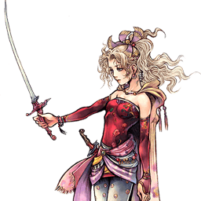

Final Fantasy VI
Terra Branford
Zoneuse défensive à projectiles, fragile mais au EX Mode dévastateur
Position dans la méta
Tier C 26ᵉ sur 30 — tier list tournoi 2017 de dissidia.wiki (moitié valeurs de matchups, moitié avis de joueurs experts).
Les sources la décrivent depuis des années comme l'un des personnages les plus faibles du jeu, sa défense souffrant particulièrement face au rushdown.
Vue d'ensemble
Terra est une lanceuse de sorts défensive qui combat à coups de projectiles depuis les longues distances. Sa stratégie de base consiste à sniper avec Thundara, charger Meltdown pour harceler et caster Holy Combo. Si l'adversaire s'approche trop, elle le repousse avec Blizzard Combo, son poke rapproché. Terra est aussi une utilisatrice efficace du Reverse Free Air Dash, qui crée de la distance pour sa magie et remplit la jauge d'assist plus sereinement.
Elle peut infliger des dégâts HP en neutral via Meltdown, ses HP links ou divers setups de hit glitch depuis ses autres coups, ce qui la fait beaucoup profiter de Side by Side et des builds à haute bravery de base. Terra peine à remplir sa jauge EX, mais son EX Mode est l'un des plus puissants du jeu : Chainspell duplique tous les projectiles, pour un contrôle d'espace et des dégâts nettement supérieurs. Elle est également l'un des rares personnages capables d'un Empty Chase sans risque n'importe où, grâce au hit stun généreux de Thundara qui la protège des Recovery Attacks.
Ses faiblesses sont criantes et tiennent surtout à sa défense : Terra souffre face aux adversaires agressifs. La plupart de ses attaques sont télégraphiées, lentes à sortir et en priorité Ranged Low, donc battues par le Free Air Dash. Son poke rapproché Blizzard Combo est plus lent et moins rémunérateur que la moyenne, ses autres options (variations de timing avec Meltdown, blocks) sont risquées, ses air dodges la laissent immobile plus longtemps que la plupart des personnages, et sa mobilité sous la moyenne combinée à une DEF de base faible lui fait payer cher chaque erreur.
Au fil des années, Terra a été considérée comme l'un des personnages les plus faibles du jeu. Sa défense souffre contre le rushdown, mais prendre le momentum avec l'assist compense une partie de ses lacunes, et sa longue portée rend le combat contre Ultimecia plus abordable que pour beaucoup de personnages de corps à corps. C'est un combat en côte pour qui vise la compétition, mais elle offre un style de jeu distinct que peu de personnages possèdent.
Forces
- Portée : Thundara, Meteor, Holy Combo et Meltdown attaquent de très loin, se complètent et mènent à des combos d'assist sur hit.
- Dégâts : la synergie avec les builds à haute BRV de base et les setups de hit glitch vers Ultima permettent d'infliger beaucoup de dégâts HP.
- EX Mode parmi les plus forts du jeu : Chainspell duplique les projectiles (plus d'espace occupé, plus de dégâts) et Holy (Combo) devient beaucoup plus rapide.
- Empty Chase sûr : Thundara est l'un des rares coups du jeu qui autorise un Chase sans se faire punir par les Recovery Attacks, où que ce soit — efficace pour récupérer de l'EX et déloger l'adversaire.
Faiblesses
- Défense : options rapprochées sous la moyenne et projectiles lents de faible priorité ; l'air dodge est plus risqué (chute lente) et la DEF de base faible augmente les dégâts de bravery subis.
- Zoning risqué : projectiles télégraphiés à long startup, souvent battus par le Free Air Dash et exposés aux attaques d'assist.
- Renversement de momentum difficile : Terra doit prendre de gros risques (blocks et autres) pour revenir dans la partie.
- Génération d'EX : la plupart de ses coups clés ne produisent quasiment pas d'EX Force ; son apport se limite aux EX Cores et à Fire au sol.
Stats & vitesses
| Nom | Terra Branford (ティナ・ブランフォード) |
|---|---|
| Jeu d'origine | Final Fantasy VI |
| ATK de base (LV100) | 111 (High) |
| DEF de base (LV100) | 110 (Low) |
| Vitesse de course | 10.5 (Very Slow) |
| Vitesse de dash | 81 (Below Average) |
| Vitesse de chute | 85 (Average) |
| Chute après esquive | 43 (Slow) |
| BRV la plus rapide | 17F (Blizzard Combo) |
| HP la plus rapide | 43F (Tornado) |
| HP en 1 coup | Yes (Multiple) |
| HP links | Yes |
| Command block | No |
| Armes | Daggers, Instruments, Rods, Staves |
| Armures | Bangles, Clothing, Hairpins, Hats,Headbands, Ribbons, Robes |
| Armes exclusives | Chain Flail, Morning Star, Maduin's Horn |
| Camp | Chaos (012) Cosmos (013) |
| Doubleur (JP) | Yukari Fukui |
| Doubleur (ENG) | Natalie Lander |
Point or : ce personnage · petits points : le reste du cast · trait violet : moyenne. Valeurs du wiki, plus bas = plus rapide ; le rang à droite se lit directement (1ᵉʳ = le plus rapide).
Coups
Barre plus courte = coup plus rapide. Startup en frames (60 i/s, données dissidia.wiki), priorité indiquée après la valeur. Les coups marqués ★ sont les plus rapides du kit — ce sont en général vos meilleurs outils de punish et de pression.
Braveries
Au sol
Blizzard Combo (ground) Melee Low
Poke de mêlée au sol (17F) qui tire des éclats de glace, combo modifiable au stick. Il existe une version vers le haut aux dégâts de base identiques, qui ne peut Wall Rush que sur les côtés et pas au plafond.
| Dégâts de base | 4, 3, 3, 10 (20) / 4, 3, 3, 14, 2 x 3 (30) |
|---|---|
| Startup | 17F |
| Type | Magical |
| Priorité | Melee Low |
| EX Force | 30 |
| Effets | Wall Rush |
| CP (maîtrisé) | 30 (15) |
Blizzard Combo A Up Melee Low
| Dégâts de base | 4, 6, 10 (20) / 4, 6, 14, 2 x 3 (30) |
|---|---|
| Startup | 17F |
| Type | Magical |
| Priorité | Melee Low |
| EX Force | 30 |
Blizzara (ground) Ranged Low
Gros bloc de glace à moyenne portée (27F, Ranged Low) doté de Magic Block et Wall Rush ; sur hit, ajoute une attaque d'éclats de glace.
| Dégâts de base | 20, 5 x 3 (35) |
|---|---|
| Startup | 27F |
| Type | Magical |
| Priorité | Ranged Low |
| EX Force | 30 |
| Effets | Magic Block, Wall Rush |
| CP (maîtrisé) | 30 (15) |
Fire Ranged Low, Unblockable (explosion)
Boules de feu basses à tête chercheuse dont l'explosion est imblocable, avec effet Chase. Ses 60 EX en font l'une des rares sources d'EX Force de Terra, au sol.
| Dégâts de base | 40 |
|---|---|
| Startup | 25F |
| Type | Magical |
| Priorité | Ranged Low, Unblockable (explosion) |
| EX Force | 60 |
| Effets | Chase |
| CP (maîtrisé) | 30 (15) |
Graviga Unblockable
Sphère de gravité larguée à longue portée (183F de startup), orientable au stick analogique, imblocable, avec Absorb et Wall Rush.
| Dégâts de base | 2 x N, 40 (40+) |
|---|---|
| Startup | 183F |
| Type | Magical |
| Priorité | Unblockable |
| EX Force | each 6 |
| Effets | Absorb, Wall Rush |
| CP (maîtrisé) | 30 (15) |
Meteor Ranged Low
Pluie de feu à longue portée en 7 impacts : les 3e et 7e apparaissent toujours juste au-dessus de la tête de l'adversaire, les autres aléatoirement. Puissant mais peu précis.
| Dégâts de base | each (15) |
|---|---|
| Startup | 65F (3rd), 133F (7th) |
| Type | Magical |
| Priorité | Ranged Low |
| EX Force | 0 |
| CP (maîtrisé) | 30 (15) |
En l’air
Blizzard Combo (midair) Melee Low
Poke rapproché et l'un des coups les plus importants de Terra : outil de keepout en priorité melee, son coup le plus rapide (17F), utile pour whiff punish et interrompre les approches ; le premier hit combote en assist pour des dégâts HP, et sa courte animation en fait un remplisseur de jauge d'assist correct sur whiff. Reste lent comparé aux pokes similaires (Double Cut 13F, Beat Fang 15F), avec une base damage du premier hit parmi les plus faibles du jeu, un knockback modeste, et c'est son seul coup en Melee Low : Terra doit varier ses timings ou risquer le stagger sur block.
Normal Melee Low
| Dégâts de base | 20 (4, 3, 3, 10) 20 (Upward. 4, 6, 10) |
|---|---|
| Startup | 17F |
| Type | Magical |
| Priorité | Melee Low |
| EX Force | 30 |
| Effets | Wall Rush |
| Cancels | Dodge |
| CP (maîtrisé) | 30 (15) |
EX Mode Melee Low
| Dégâts de base | 30 (4, 3, 3, 14, 2 x 3) 30 (Upward. 4, 6, 14, 2 x 3) |
|---|---|
| Startup | 17F |
| Type | Magical |
| Priorité | Melee Low |
| EX Force | 30 |
| Effets | Wall Rush (Side only) |
| Cancels | Dodge |
| CP (maîtrisé) | 30 (15) |
Blizzara (midair) Ranged Low
Version aérienne de Blizzara, annulable en dodge, avec les mêmes propriétés (Magic Block, Wall Rush).
| Dégâts de base | 20, 5 x 3 (35) |
|---|---|
| Startup | 27F |
| Type | Magical |
| Priorité | Ranged Low |
| EX Force | 30 |
| Effets | Magic Block, Wall Rush |
| Cancels | Dodge |
| CP (maîtrisé) | 30 (15) |
Holy Combo Ranged Low (Holy), Mid (Flare)
Projectiles de lumière à longue portée : si Holy touche, l'attaque enchaîne sur Flare. Son startup passe de 37F à 13F en EX Mode, ce qui aide beaucoup au contrôle d'espace.
| Dégâts de base | each (6), 7 x 4 (34+) / 7 x 9 (69+) |
|---|---|
| Startup | 37F / 13F (EX mode) |
| Type | Magical |
| Priorité | Ranged Low (Holy), Mid (Flare) |
| EX Force | 0 |
| CP (maîtrisé) | 30 (15) |
Thundara Ranged Low
Anneau d'éclairs qui se resserre sur l'adversaire (19F), avec effet Chase. Son hit stun généreux permet à Terra d'Empty Chase sans se faire punir par les Recovery Attacks, où que ce soit.
| Dégâts de base | each (4) |
|---|---|
| Startup | 19F |
| Type | Magical |
| Priorité | Ranged Low |
| EX Force | each 9 |
| Effets | Chase |
| CP (maîtrisé) | 30 (15) |
Holy Ranged Low
Projectiles de lumière à vitesse normale et homing fort, avec effet Chase ; startup ramené de 37F à 13F en EX Mode.
| Dégâts de base | each (6) |
|---|---|
| Startup | 37F / 13F (EX mode) |
| Type | Magical |
| Priorité | Ranged Low |
| EX Force | 0 |
| Effets | Chase |
Attaques HP
Au sol
Flood Unblockable
HP au sol secondaire : des piliers d'eau en vraie priorité imblocable (ni bloquables ni réfléchissables) qui interrompent les attaques à long startup (Meteorain de Cloud, Cyclone de Garland...) et punissent les air dodges à déplacement court ; le second pilier réapparaît sur la position adverse et attrape le landing lag. Peu utilisé à cause de sa lenteur et de sa faible couverture (esquivable avec Evasion Boost). En EX Mode, casté deux fois pour un total de 6 piliers, plus durs à esquiver.
| Startup | 71F |
|---|---|
| Priorité | Unblockable |
| EX Force | 60 |
| CP (maîtrisé) | 30 (15) |
Tornado (ground) Melee High
Tornade invoquée autour de soi et déplaçable (43F, Melee High), avec Absorb et Wall Rush.
| Dégâts de base | 1 x 10 (10) |
|---|---|
| Startup | 43F |
| Type | Magical |
| Priorité | Melee High |
| EX Force | 30 |
| Effets | Absorb, Wall Rush |
| CP (maîtrisé) | 30 (15) |
En l’air
Tornado (midair) Melee High
Version aérienne de Tornado, aux propriétés identiques : Melee High, Absorb et Wall Rush.
| Dégâts de base | 10 (1 x 10) |
|---|---|
| Startup | 43F |
| Type | Magical |
| Priorité | Melee High |
| EX Force | 30 |
| Effets | Absorb, Wall Rush |
| CP (maîtrisé) | 30 (15) |
Meltdown Ranged High
Seul HP 1-hit aérien de Terra et outil clé d'autodéfense, chargeable en 3 niveaux (55F/91F/145F). La version non chargée est une déflagration rapprochée rapide, utile après un stagger de block ou comme mixup ; les versions chargées (LV2 avant 145 frames, LV3 à pleine charge) sont de grosses boules de feu à longue durée active pendant lesquelles Terra peut agir, qui forcent l'approche et rebondissent sur le sol et les murs (peuvent toucher hors champ). Long startup et longue recovery : Meltdown expose aux whiff punish et assist punish, peut être renvoyé par les attaques à haute priorité (Braver, Blasting Zone, Jecht Block), disparaît si Terra est touchée, et sa vitesse moyenne autorise blodge ou Precision Evasion.
| Startup | 55F (LV1) / 91F (LV2) / 145F (LV3) |
|---|---|
| Priorité | Ranged High |
| EX Force | 0 |
| Effets | Wall Rush |
| CP (maîtrisé) | 30 (15) |
HP links (Bravery → HP)
Attaques HP qui se déclenchent en prolongement d'une bravery précise — le « HP link ». Elles s'équipent comme les autres attaques HP.
Firaga ?
Branche de Fire : allume des explosions sur l'adversaire, avec Wall Rush ; n'inflige des dégâts de bravery (20) qu'en EX Mode.
| Dégâts de base | 20 (EX mode only) |
|---|---|
| Startup | ? |
| Priorité | ? |
| EX Force | 0 |
| Effets | Wall Rush |
| CP (maîtrisé) | 30 (15) |
Ultima Unblockable
Branche de Holy Combo, imblocable, avec Absorb et Wall Rush. C'est le débouché des setups de hit glitch de Terra et le cœur de son combo d'EX Mode (Meltdown > Holy Combo > Ultima).
| Dégâts de base | 7 (1 x 7) |
|---|---|
| Startup | ? |
| Type | Magical |
| Priorité | Unblockable |
| EX Force | 0 |
| Effets | Absorb, Wall Rush |
| CP (maîtrisé) | 30 (15) |
EX Mode: Trance! & EX Burst
EX Mode « Trance! » : Regen, Critical Boost, Glide et Chainspell. Chainspell (caster, puis presser Cercle ou Carré) relance le même sort avec une puissance magique accrue : tous les projectiles sont dupliqués, pour un contrôle d'espace et des dégâts nettement supérieurs — l'overview le classe parmi les EX Modes les plus forts du jeu. Holy et Holy Combo voient en outre leur startup passer de 37F à 13F, Flood est casté deux fois (6 piliers) et Meltdown tire deux projectiles HP au lieu d'un.
Glide (maintenir Croix en l'air) utilise le pouvoir d'esper caché de Terra pour se déplacer librement dans les airs.
EX Burst : EX Burst « Riot Blade » : l'énergie concentrée dans les deux mains est tirée en une multitude de lames ; marteler gauche et Cercle pour monter les jauges de gauche et de droite. 100 de dégâts de base au total (10 x 3 puis 14 x 5), type magique.
Plan de jeu & techniques avancées
En neutral, jouez la distance : snipez avec Thundara, chargez Meltdown pour harceler et forcer l'approche, castez Holy Combo. Si l'adversaire arrive au contact, Blizzard Combo sert de keepout et de whiff punish. Utilisez le Reverse Free Air Dash pour recréer de la distance et remplir la jauge d'assist en sécurité, et l'Empty Chase via Thundara pour récupérer de l'EX sans risque tout en délogeant l'adversaire.
La jauge EX est votre ressource critique : la plupart des coups clés n'en génèrent pas, donc appuyez-vous sur les EX Cores, sur Fire au sol, voire sur un build High Initial EX (Meteor > Fire > Chase suffit alors à finir de remplir la jauge sur hit). Une fois en EX Mode, Chainspell transforme le personnage : projectiles dupliqués, Holy Combo à 13F, Meltdown double.
Le plan de combo documenté (avec Jecht ou Aerith en assist) : après une confirmation, infliger assez de dégâts pour bravery break, revenir à la bravery de base et Wall Rush pour des dégâts supplémentaires. En EX Mode, préparez un Meltdown (deux projectiles HP) : dès qu'un Meltdown touche, enchaînez Holy Combo puis Ultima — le second Meltdown relance en prime la récupération de bravery de base sur hit. Après Holy Combo, retardez le premier Ultima pour débloquer la barre d'assist et attraper le dodge adverse ; près d'un mur, un Meltdown rapide peut même s'insérer pendant l'assist Jecht avant Holy Combo. Selon le build adverse, cette séquence peut terminer le match.
Techniques spécifiques
Safe Empty Chase (Thundara)
Grâce au hit stun généreux de Thundara, Terra peut initier un Chase sans rien faire (Empty Chase) sans se faire punir par les Recovery Attacks, où que ce soit sur le stage : utile pour engranger de l'EX et refuser à l'adversaire sa position. Précision de périmètre : ce caractère « sûr » (pas de punition par Recovery Attack) est distinct du reset de jauge d'assist — pour ce dernier, le relevé communautaire ne crédite Terra que de Holy à bout portant, Fire échouant de justesse.
Sources : pastebin.com/dKSWgUQ6
Hit glitch setups
Les sources mentionnent divers setups de hit glitch depuis ses autres coups, convertis en Ultima pour de gros dégâts HP ; c'est l'une des raisons de sa synergie avec les builds à haute bravery de base.
Ultima retardé
Après Holy Combo, retarder le premier Ultima débloque la barre d'assist et attrape le dodge adverse : sans Evasion Boost ni Precision Evasion en face, Ultima est pratiquement garanti et peut relancer un combo d'assist avec Wall Rush si la jauge le permet.
Routes de combo solo recensées
De nombreux combos puissants mais inconstants : Meteor (sur adversaire aérien) > landing lag > Fire ou Holy Combo ; Meltdown niveau 2/3 > dodge cancel > hit glitch Holy Combo ; Graviga > DC > Tornado ; Thundara (zone médiane) > DC > Thundara (bord) ; EX Thundara (zone médiane) > hit glitch sur la seconde volée > Chase HP ou EX Holy Combo ; EX Graviga > n'importe quoi ; Meltdown niveau 2 posé > DC > Thundara > Chase HP à vide > hit de Meltdown.
Sources : pastebin.com/8FWDXjvJ
Techniques universelles (blodge, dash feint, lock off, dodge punishment) : voir la page Techniques & glitches.
Matchups
La page matchups du wiki est à l'état d'ébauche : aucune analyse détaillée par personnage n'est disponible. Seuls des repères généraux ressortent de l'overview : Terra souffre avant tout face aux adversaires agressifs, ses attaques télégraphiées, lentes et en Ranged Low perdant contre le Free Air Dash, et sa défense encaissant mal le rushdown.
À l'inverse, ses capacités à longue portée rendent le combat contre Ultimecia plus abordable que pour la plupart des personnages de corps à corps.
Vidéos de matchs : Replay Theater — matchs de Terra Branford.
Builds
Le build « High Initial EX » (effet Seal of Lufenia, arme Zwill Crossblade, panoplie Lufenian, Jecht ou Aerith en assist, Rubicante en summon) fait démarrer Terra avec la jauge EX remplie à 90 %. Sa génération d'EX étant l'un de ses points faibles, c'est un bon moyen de garantir l'accès à son puissant EX Mode en quelques interactions réussies : Meteor > Fire > Chase suffit à remplir la jauge sur hit, et un seul EX Core complète le reste au besoin. Extra abilities recommandées : First Strike, EX Critical Boost et Precision Evasion.
Le build « Side by Side » (effet Judgment of Lufenia, Max Booster x4,6, assist Jecht / Aerith / Sephiroth) empile les accessoires conditionnels (Empty EX Gauge, Summon Unused, Pre-EX Mode, Pre-EX Revenge, Together As One, Side By Side...) pour capitaliser sur la force de Terra en combos d'assist, avec le plan break > retour à la bravery de base > Wall Rush décrit dans le gameplan.
| Stats | |
|---|---|
| HP | 9971 |
| CP | 450 |
| BRV | 1075 (1827 with Hero's Seal) |
| ATK | 177 |
| DEF | 182 |
| LUK | 60 |
| Max Booster | x1.5 |
| Equipment | |
|---|---|
| Assist | Jecht / Aerith |
| Weapon | Zwill Crossblade |
| Hand | Lufenian Bangle |
| Head | Lufenian Hairpin |
| Body | Lufenian Jacket |
| Accessory 1 | Hyper Ring |
| Accessory 2 | Earring |
| Accessory 3 | Large Gap in HP |
| Accessory 4 | Cyan Drop |
| Accessory 5 | Cyan Drop |
| Accessory 6 | Cyan Drop |
| Accessory 7 | Red Gem |
| Accessory 8 | Cyan Gem |
| Accessory 9 | First to Victory |
| Accessory 10 | Hero's Seal |
| Summon | Rubicante |
| Coup | Type | Où l’équiper | CP |
|---|---|---|---|
| Blizzara (ground) | Bravery | Au sol | 30 |
| Blizzara (midair) | Bravery | En l’air | 30 |
| Blizzard Combo (ground) | Bravery | Au sol | 30 |
| Blizzard Combo (midair) | Bravery | En l’air | 30 |
| Firaga | HP | Au sol | 30 |
| Fire | Bravery | Au sol | 30 |
| Flood | HP | Au sol | 30 |
| Graviga | Bravery | Au sol | 30 |
| Holy Combo | Bravery | En l’air | 30 |
| Meltdown | HP | En l’air | 30 |
| Meteor | Bravery | Au sol | 30 |
| Thundara | Bravery | En l’air | 30 |
| Tornado (ground) | HP | Au sol | 30 |
| Tornado (midair) | HP | En l’air | 30 |
| Ultima | HP | En l’air | 30 |
Le wiki laisse vide le tableau des coups équipés de ce ou ces builds : ce moveset n'est pas documenté. À défaut, voici le coût en CP de chaque coup, à mettre en regard du total du build. Les coups les plus chers sont en haut.
| Equipment | Replacement |
|---|---|
| Red Gem | Free choice |
Combo
| Stats | |
|---|---|
| HP | 9683 |
| CP | 450 |
| BRV | 1284 |
| ATK | 178 |
| DEF | 183 |
| LUK | 60 |
| Max Booster | x4.6 |
| Equipment | |
|---|---|
| Assist | Jecht / Aerith / Sephiroth |
| Weapon | Lufenian Claw |
| Hand | Lufenian Shield |
| Head | Thornlet |
| Body | Lufenian Armor |
| Accessory 1 | Protect Stud |
| Accessory 2 | Dismay Shock |
| Accessory 3 | Battle Hammer |
| Accessory 4 | Empty EX Gauge |
| Accessory 5 | Summon Unused |
| Accessory 6 | Pre-EX Mode |
| Accessory 7 | Pre-EX Revenge |
| Accessory 8 | Opponent Summon Unused |
| Accessory 9 | Together As One |
| Accessory 10 | Side By Side |
| Summon | Rubicante |
Les deux builds supposent l'utilisation de l'Equip Glitch (équipement « Gear ») et le coût total en CP en tient compte. Dans le build High Initial EX, le Red Gem (+5 % de dégâts) peut être remplacé librement selon le matchup ou le stage.
Synergies d'assist
Terra Branford en tant qu'assist
En tant qu'assist, Terra est classée dans le tier Mid de la tier list assist (de Muggshotter). Ses données : Graviga en BRV au sol (183F, spawn sur le joueur, Wall Rush), Blizzara en BRV aérien (27F, spawn sur l'adversaire, Wall Rush), Flood en HP au sol (71F, Chase) et Meltdown en HP aérien (145F, Wall Rush). Les sources ne fournissent pas d'évaluation rédigée au-delà de ces données.
Assists recommandées
- Jecht — Assist de référence des deux builds documentés : après une confirmation, Terra vise break, retour à la bravery de base et Wall Rush ; près d'un mur, un Meltdown rapide peut s'insérer pendant l'assist Jecht avant Holy Combo.
- Aerith — Alternative à Jecht dans les deux builds documentés, avec le même plan de combo (break, reset de bravery, Wall Rush puis Holy Combo > Ultima).
- Kuja — La section synergies indique que Terra fonctionne bien avec Aerith, Kuja et Jecht, sans plus de détail (les onglets dédiés sont vides dans les sources).
Tech communautaire
Terra Branford Guide — Soki_25 (GameFAQs) 2011
Guide GameFAQs d'époque : arsenal BRV/HP commenté, abilities et assists recommandés, combos (Meteor -> Blizzara, Meltdown chargé -> Holy Combo -> Ultima), conseils matchup contre tout le cast et par arène.
https://gamefaqs.gamespot.com/psp/605802-dissidia-012-duodecim-final-fantasy/faqs/62359
Liste de combos solo de tout le cast (Eddiegames) 2022
Relevé communautaire des routes de combo solo des 31 personnages, rédigé par Eddiegames sur le Discord DISSIDIA et publié en pastebin (dernière mise à jour décembre 2022). Terra y est décrite avec de nombreux combos puissants mais inconstants.
Liste des empty chases menant à un reset de jauge d'assist (Eddiegames)
Relevé personnage par personnage des coups dont le hit stun permet un empty chase (un chase initié sans rien y exécuter) suivi d'un reset de la jauge d'assist adverse. Le détail pour ce personnage est repris dans les techniques spécifiques.
Sources
- https://dissidia.wiki/Terra_Branford_(Dissidia_012)
- https://gamefaqs.gamespot.com/psp/605802-dissidia-012-duodecim-final-fantasy/faqs/62359
- https://pastebin.com/8FWDXjvJ
- https://pastebin.com/dKSWgUQ6
- https://dissidia.wiki/Tier_List_(Dissidia_012)
- https://dissidia.wiki/Tier_List_(Assist)
Limites connues
- Page matchups à l'état d'ébauche (stub) : aucune analyse par personnage, seuls des repères issus de l'overview.
- Section combos non documentée (sous-section Solo vide dans les sources).
- Onglets de synergies d'assist (Jecht, Aerith, Kuja) vides : la recommandation n'est pas argumentée au-delà d'une phrase.
- Aucune mécanique unique documentée pour Terra.
- Aucune référence communautaire (section References vide), d'où un communityTech vide.
- Startup inconnu pour Firaga et Ultima (« ? » dans les données) ; gain de jauge d'assist non renseigné pour tous les coups ; un variant aérien de Blizzard Combo est listé sans nom.
- La liste des attaques équipées dans les builds n'est pas renseignée dans les tables extraites.
- Le relevé d'empty chases de la communauté n'est pas daté (le relevé de combos solo qui l'accompagne l'est de décembre 2022) : son état de fraîcheur ne peut pas être établi.
- Section « Bravery to HP Attacks » (table Dissidia 012) de la page du personnage sur le Final Fantasy Wiki : classement absent des notes de dissidia.wiki, réintégré depuis cette source.